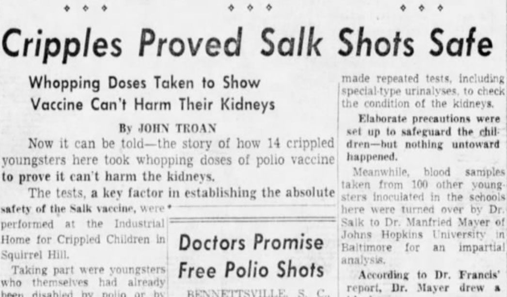
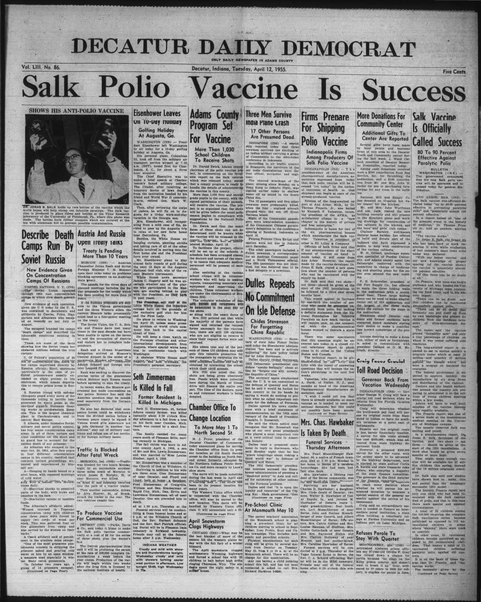
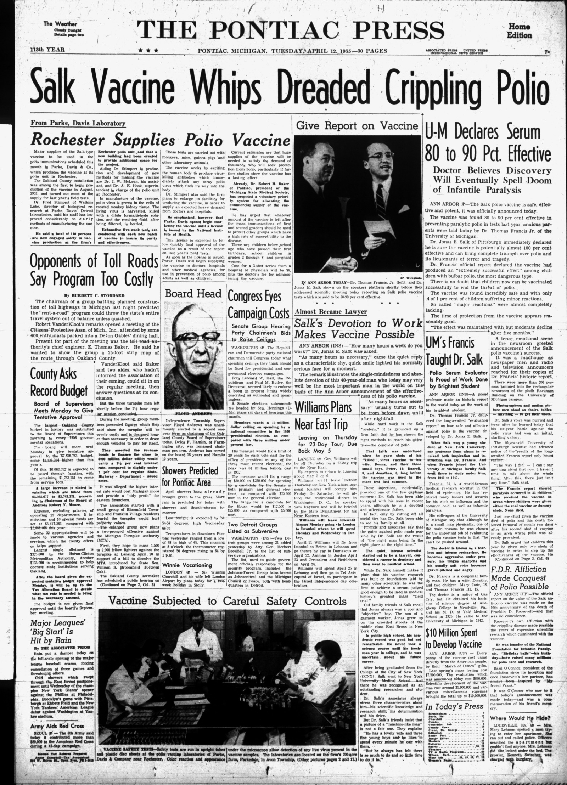
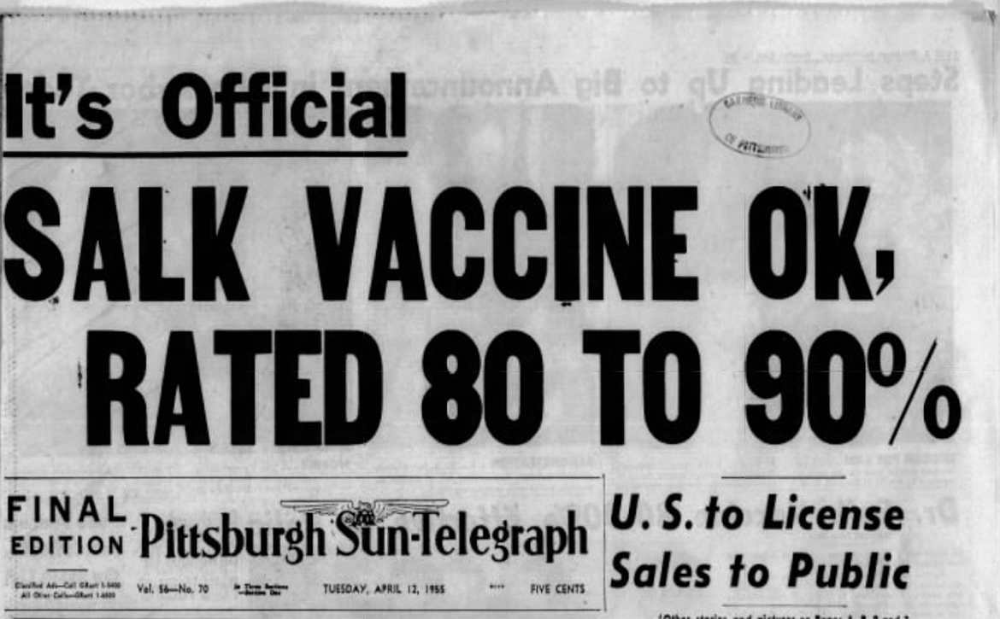
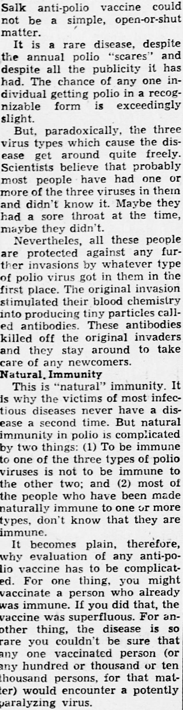
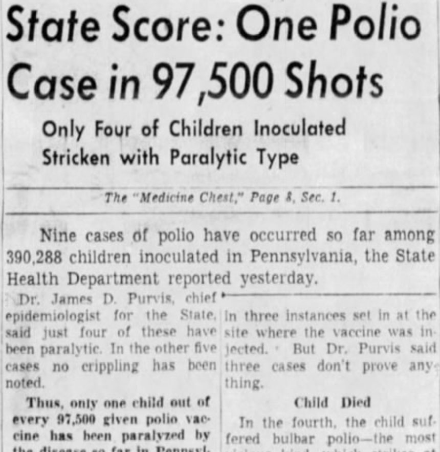
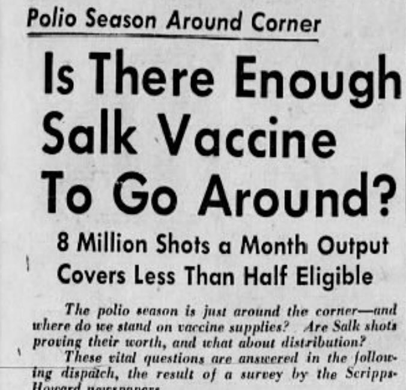

HN-602 · April 12, 1955 · Medicine & Public Health > Pharmaceuticals, Vaccines & Drug Safety > Vaccines
Source: Decatur Daily Democrat, p. 1 — original page; CDC Museum, development of polio vaccines.
Report: “Salk Polio Vaccine Is Success†marked public release of the major trial evaluation of Jonas Salk's inactivated-virus vaccine, accompanied by a photograph of vaccine vials.
Assessment: The April 12 efficacy announcement was a breakthrough, but it was not proof that all manufactured lots were safe or that polio had been eliminated. The subsequent Cutter manufacturing failure became public within weeks; the positive clinical trial and a specific production defect must be distinguished.
Authentic images retrieved from Pittsburgh Post-Gazette (polio history interactive, Post-Gazette Archives scans), Hoosier State Chronicles (Indiana State Library), Oakland University (The Pontiac Press) and Historic Oregon Newspapers (University of Oregon). Article crops are located using the archive's own OCR word coordinates and rendered at native crop resolution; article clips are assembled from the archive's own article-block images; page images marked "archive tiles" are stitched from the archive's own tiled page service at its 256-px tile cap; page images marked "issue PDF" are single pages rasterised from the archive's own issue PDF, with the page chosen by matching the headline against the PDF's text layer; page scans are reduced-size access renditions. No images were generated, mocked, or retouched.







Status: Archive images acquired
Authentic archive-owned image renditions were retrieved for this record and are displayed above. The source-acquisition manifest preserves the original pre-acquisition feasibility assessment.
URL (preserved verbatim): https://newspapers.library.in.gov/?a=d&d=DCDD19550412.1.1
Saved research report: Historical_Newspaper_Event_Research_578-602_2026-10-23.md
Evidence note: A newspaper report means a historical publication made a claim; it does not establish that claim as fact. Contemporary reporting is separated from later scholarly context and our own assessment.